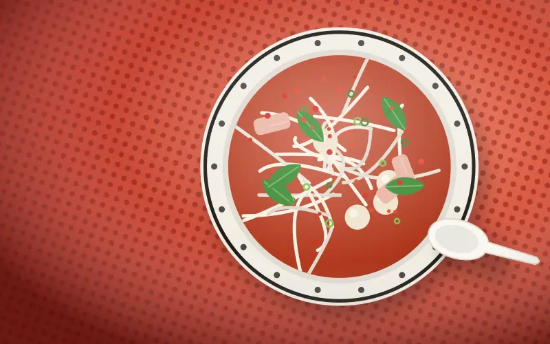

Cheap eats in Sha Tin 沙田區
9 places, from $34. Tap one for prices, hours and the nearest MTR.
 Lung Wah Hotel龍華酒店 · Sha Tin$98
Lung Wah Hotel龍華酒店 · Sha Tin$98  Honeymoon Dessert (Sha Tin)滿記甜品（沙田） · Sha Tin$58
Honeymoon Dessert (Sha Tin)滿記甜品（沙田） · Sha Tin$58  Kee Wah Bakery (Sha Tin)奇華餅家（沙田） · Sha Tin~$38
Kee Wah Bakery (Sha Tin)奇華餅家（沙田） · Sha Tin~$38 Bafang Dumpling (Tai Wai)八方雲集（大圍） · Tai Wai$52
Bafang Dumpling (Tai Wai)八方雲集（大圍） · Tai Wai$52  Lo Chiu Vietnamese (Tai Wai)老趙越南餐廳（大圍） · Tai Wai$72
Lo Chiu Vietnamese (Tai Wai)老趙越南餐廳（大圍） · Tai Wai$72 
Tam Jai Yunnan Mixian (Fo Tan)譚仔雲南米線（火炭） · Fo Tan$56 Tsui Wah (Sha Tin)翠華（沙田） · Sha Tin$78
Tsui Wah (Sha Tin)翠華（沙田） · Sha Tin$78  Maxim's MX (Sha Tin)美心MX（沙田） · Sha Tin$62
Maxim's MX (Sha Tin)美心MX（沙田） · Sha Tin$62  Café de Coral (Ma On Shan)大家樂（馬鞍山） · Ma On Shan$34
Café de Coral (Ma On Shan)大家樂（馬鞍山） · Ma On Shan$34